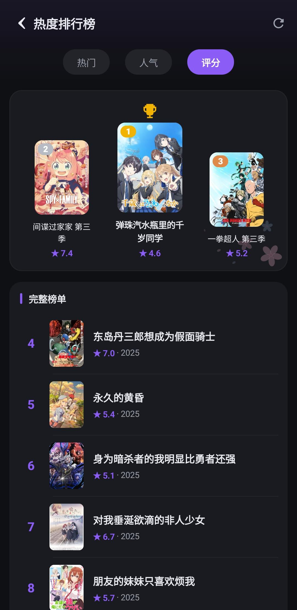
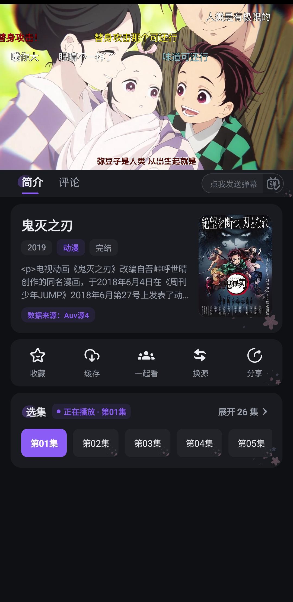

用了半年哈哩哈哩才发现的五个隐藏功能，官方没说但真的香
大多数人把哈哩哈哩当成追番播放器就完事了，其实它藏着自适应清晰度、多层评论链、会员专属弹幕颜色等一堆冷门设置——翻到底朝天的折腾党来报菜名
你以为哈哩哈哩就是个追番看剧的播放器？点开官网选番、进播放器开看、关掉完事——大部分人也就用到这一步。但我把它翻了个底朝天（设置页每个开关都试了一遍、会员权益逐条对着看了、社区里把评论区从头到尾摸了一圈），才发现它藏着一堆官方都不宣传的冷门功能，有些真能改变使用体验。
下面这五个，我选番季日常用了快半年，越用越香。
自适应清晰度：让它自己判断，别手动切
播放器右上角那个画质按钮，99% 的人都是手动选"超清"然后不管了。但很少有人知道，设置面板里还藏着一个"自适应清晰度"开关——网络好的时候自动切到原画，Wi-Fi 信号弱或者切到 4G/5G 流量时，它会自动降级到超清甚至高清，全程不用你管。
这个功能我是上个月才在播放器的高级设置里翻到的，安装包还是从官方下载拿到的，第三方渠道可能默认关了这个功能。之前地铁通勤追番，经常忘记手动从原画切下来，结果一进地铁隧道缓冲到天荒地老，以为 APP 崩了。开了自适应之后，进隧道自动降到高清，出了隧道 Wi-Fi 一连上又升回原画，全程没有手动操作。唯一的坑是第一次开的时候它可能会在几秒内切来切去，别急，等它稳定下来就好。

多层楼中楼回复：社区评论不止一层
哈哩哈哩的社区评论区，大多数人就是发个评论、看到别人回复自己点个赞就完事了。但它其实支持多层楼中楼——A 评论、B 回复 A、C 回复 B、D 回复 C……形成一条完整的回复链。
怎么开？其实不用开，就是个冷门交互，翻了halihali文档才确认这不是我瞎摸索出来的隐藏彩蛋。点某条评论底部的"回复"按钮，输入框会自动 @ 该用户，发出去之后，这条回复就会嵌套在原评论下面。而别人再回复你的回复，又会嵌在你的回复下面，形成一层层往下叠的结构。关键是，点击每条回复旁边的展开箭头，可以看到完整的回复链，不会漏掉任何一层。
这个功能在讨论新番剧情时特别有用——比如有人剧透了关键情节，下面可以精准地只回复那条剧透评论，而不是在整个帖子下面乱发。我之前追一部推理番，看到有人在主楼剧透凶手，直接在那条剧透评论下面发了个"剧透警告"，其他人看到就能及时避开，体验好很多。
会员彩色弹幕：别让你的弹幕淹没在白色海洋里
很多人开会员就是为了原画和无广告，其他权益看都不看。但会员还有个藏得很深的小特权——彩色弹幕标识。
普通用户发弹幕是白色的，会员发弹幕自动带颜色。不是那种花里胡哨的彩虹条，就是比白色稍微显眼一点的蓝色或紫色，目的是让其他追番的人一眼就能看到"这条弹幕是会员发的"。我一开始以为这得手动设置，结果发现根本不用——只要你是会员，发弹幕的时候自动就是彩色，在弹幕密集的地方（比如 OP 开头、经典场景），你的弹幕不会被白色海洋淹没。
注意一点：彩色弹幕只有你发的时候自动生效，不需要在设置里开任何开关。但如果你不是会员，哪怕手动在弹幕设置里调了颜色，发出去也还是白色的——这是会员专属权益。
iPad 横屏漫画：屏幕利用率翻倍
哈哩哈哩的漫画阅读器，在手机上默认竖屏阅读，iPad 上大多数人也是竖屏开着。但其实横屏模式下，iPad 会自动切成双页并排布局——左边一页、右边一页，像翻实体书一样。
我之前一直没注意到这个，直到有天 iPad 不小心横过来了，发现画面突然变成了两页并排，翻页体验直接上了一个档次。尤其是那种画面横向展开的大场景（比如战斗场面、风景图），双页并排比单页竖屏看要震撼得多。
开启方式也简单：iPad 上把屏幕旋转锁定关掉，横过来它就自动切双页了。如果没反应，检查一下 APP 设置里"漫画阅读器"有没有开"自动旋转"——默认应该是开着的。
通知分类开关：别让无关通知淹没重要消息
哈哩哈哩的通知设置藏得比想象中深，而且支持精细分类。很多人觉得消息通知太吵就直接全关了，但其实可以选择性地关：评论回复、@ 通知、点赞通知、新番更新、追番提醒，每一类都能单独开关。
我之前嫌通知太吵，直接全关了，结果追的几部番更新了没收到提醒，晚了好几天才看到。后来翻通知设置发现可以分开关闭：只开"追番更新"和"回复你的评论"，关掉点赞和其他无关推送。现在每天只收到 2~3 条有用的通知，不会被刷屏，该有的提醒一个不落。
设置路径：个人中心 → 设置 → 通知设置 → 评论相关通知 → 逐项开关。官方没写这个路径，我是在翻设置的时候一层层点进去才找到的，估计藏在某个角落没被索引到。
一个需要提醒的坑
最后说一个我踩过的坑：自适应清晰度虽然香，但离线缓存的时候可别忘了手动选原画或超清——自适应只在在线播放时生效，下载的时候它会用当前的清晰度设置，如果刚好切在高清，下载下来的缓存也是高清的，离线看就糊了。缓存时手动选一次原画，比事后发现糊了再重下要省事得多。

把哈哩哈哩用透的感觉，其实就是把那些"默认设置"翻一遍，把那些"没标出来的选项"点一遍。很多时候不是 APP 功能少，是我们习惯了默认用法。上面这五个是我自己用得最频繁的，你要是也有私藏的冷门技巧，评论区聊聊。
这套资料跨平台做了三份镜像——GitHub、Gitee、GitCode，国内网络选后两个更稳，GitHub 适合海外访问。